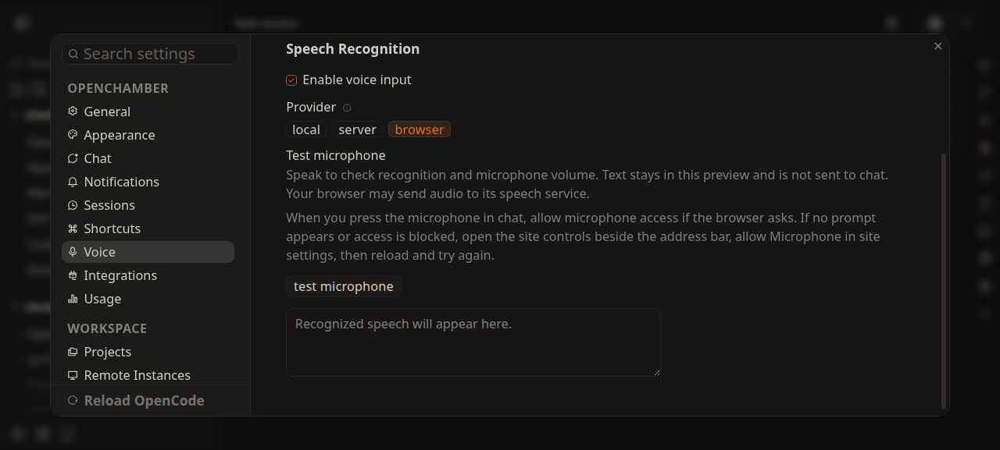
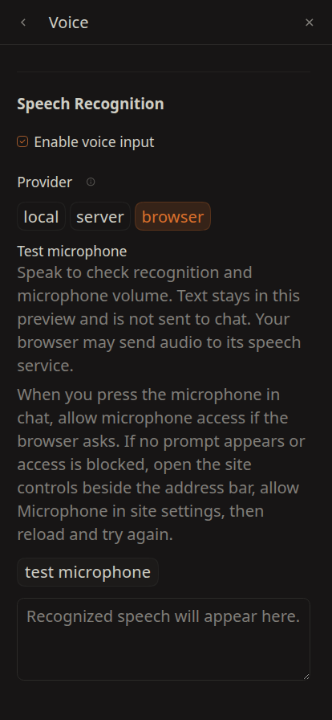

PR #3453 — Voice Settings görselleri (güncel HEAD)
Bu görseller henüz GitHub'a gönderilmedi. Onayından sonra PR'a eklenecek.
1) Geniş panel (desktop, 1280px)

evidence-voice-wide.png — Browser chip seçili, Test microphone paneli + izin metni + buton + transcript kutusu
2) Dar panel (mobil, 414px)

evidence-voice-narrow.png — Aynı bölüm mobil yerleşimde